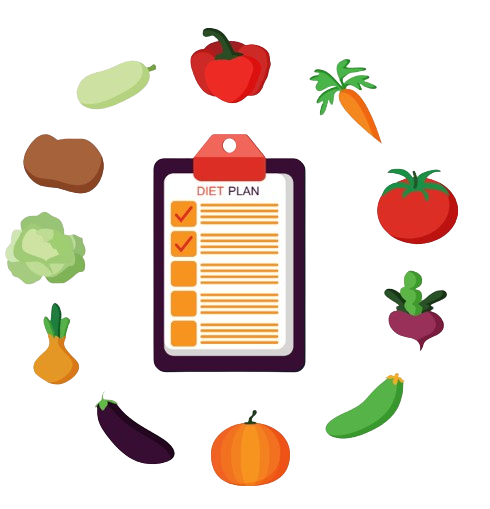
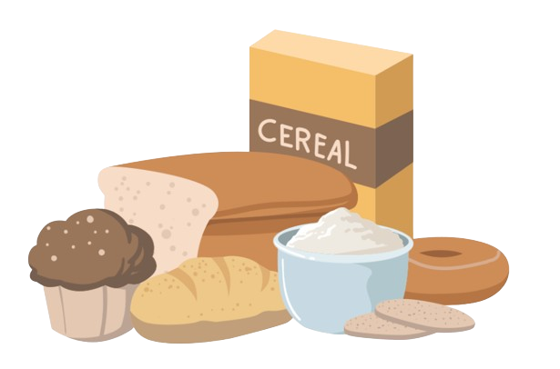

TIPS DIET BERAT BADAN
(diet vegetarian & KarbOhidrat)
Meningkatkan jumlah makanan tanpa daging yang disukai, sehingga segera cepat terbiasa memiliki pola makan tanpa daging di dalamnya.
Mengganti daging yang ada dalam menu makanan favorit dengan bahan makanan untuk vegetarian.
Memperluas pengetahuan mengenai menu makanan ramah vegetarian yang banyak beredar luas di internet, buku menu, maupun restoran-restoran yang memang khusus diperuntukkan bagi vegetarian.


Meningkatkan jumlah makanan tanpa daging yang disukai, sehingga segera cepat terbiasa memiliki pola makan tanpa daging di dalamnya.
Mengganti daging yang ada dalam menu makanan favorit dengan bahan makanan untuk vegetarian.
Memperluas pengetahuan mengenai menu makanan ramah vegetarian yang banyak beredar luas di internet, buku menu, maupun restoran-restoran yang memang khusus diperuntukkan bagi vegetarian.